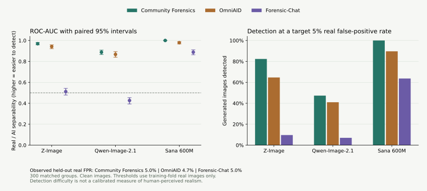
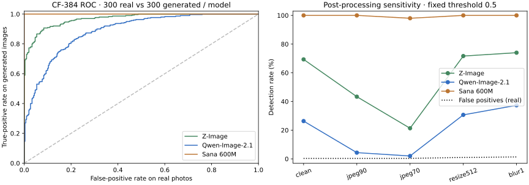

如何判断
真实性应看多条证据是否一致。先确认检测器能正确接受真实照片，再看三模型的检出率；同时检查文本一致性、结构细节和画质。画质分数高、检测分数高，都不能单独证明摄影真实感更强。
本次总体证据更支持把 Qwen 作为质量参照、Z-Image 作为另一条有效基线。Qwen 在原图条件下更难被 CF-384 与 OmniAID 识别，PickScore、MUSIQ 和 HPSv3 均值也更高。HPSv3 原始 mu 的 Z-Image／Qwen／Sana 均值为 13.42／13.62／12.67；Qwen−Z-Image 配对差为 0.197，95% 区间 [0.042, 0.368]。这是本数据和指标下的证据，尚未进行人类盲评，不构成普适排名。
展开各指标的支持证据、分歧与限制
本次已经出现评分分歧：MUSIQ 偏向 Qwen 的画质，而 NIQE 对真实照片的自然图像统计更满意。不要把这些结果压成一个没有标定依据的总分。
Sana 的 LongCLIP 原始内积与归一化余弦均值高于另两模型，但 CF-384 在本次原图条件下识别了全部 300 张 Sana 输出。文字语义相符与摄影真实感是两项独立要求，应分别追踪。
新增的 HPS v2.1 偏好分数（×100）为 Z-Image 28.19、Qwen 28.34、Sana 29.63；MANIQA 画质分数分别为 0.453、0.454、0.429。Z-Image 与 Qwen 的 MANIQA 配对差值 95% 区间为 [-0.0090, 0.0057]。偏好模型和画质模型可以给出不同排序，应结合检测器与人物结构检查解释，不能把偏好分数当成摄影真实性。
OmniAID 在默认阈值下把 14.3% 的真实照片判成 AI 图。仅用训练折真实图校准阈值后，留出折实际误判率为 4.7%，Z-Image／Qwen／Sana 的检出率分别为 64.7%／41.0%／89.7%。跨检测器比较时，必须同时看真实误判率，不能只比较默认阈值的检出率。
处理稳定性同样重要：OmniAID 对 Z-Image／Qwen 的原图 AUC 为 0.942／0.867，JPEG70 后为 0.674／0.757。本组实验中的检测难度排序随压缩发生变化；低检出率不应解释为压缩让人物结构或人眼真实感变好了。
PickScore 对 Z-Image／Qwen／Sana 的均值为 21.16／21.69／21.39；CLIP-IQA 分别为 0.608／0.605／0.682。不同偏好和画质模型的排序仍有分歧，应保留各项结果，不能用其中一项替代真实度测量。PickScore 与 HPS v2.1 的长提示词截断情况见下方协议说明。
Forensic-Chat 在本数据上的辨别能力有限。本次沿用 RealGen reward scorer 的首词 real/fake logits 打分，未生成完整文字解释。Z-Image／Qwen／Sana 的 AUC 为 0.511／0.427／0.888；在留出真实误判率 5.0% 下，检出率分别为 9.7%／7.0%／63.7%。Z-Image 接近随机区分，Qwen 的 AUC 低于 0.5；保留原始方向，不在此评估集上翻转分数或拟合分类头。低检出率反映此打分方式对该数据缺乏辨别力，不能单独支持接近完全真实的结论。
AI 检测：先看真实照片误判，再看生成图
AUC/AP 越高，表示检测器越容易把该模型与真实照片区分开；生成检出率越低，只表示更难被该检测器识别。AP 在 300 真 + 300 假的平衡条件下计算。P(real) 是模型输出，未经概率校准。


Community Forensics 384
默认阈值 0.5：真实照片误判率 0.3%。五折仅用训练折真实照片设置约 5% FPR 阈值，留出折实际误判率 5.0%。
| 生成模型 | ROC-AUC [95% CI] | AP | 检出率 @0.5 | 平衡准确率 | 检出率 @约5%FPR | Brier ↓ |
|---|---|---|---|---|---|---|
| Z-Image | 0.969[0.958, 0.981] | 0.972 | 69.3% | 84.5% | 82.3% | 0.134 |
| Qwen-Image-2.1 | 0.888[0.866, 0.908] | 0.886 | 26.3% | 63.0% | 47.3% | 0.334 |
| Sana 600M | 1.000[1.000, 1.000] | 1.000 | 100.0% | 99.8% | 100.0% | 0.003 |
同一图片处理前后 · AUC / 检出率
| 处理 | 真实误判率 @0.5 | Z-Image | Qwen | Sana |
|---|---|---|---|---|
| clean | 0.3% | 0.969 / 69.3% | 0.888 / 26.3% | 1.000 / 100.0% |
| jpeg90 | 0.3% | 0.939 / 43.3% | 0.795 / 4.3% | 1.000 / 100.0% |
| jpeg70 | 0.3% | 0.900 / 21.3% | 0.759 / 2.0% | 1.000 / 98.0% |
| resize512 | 1.0% | 0.973 / 71.7% | 0.907 / 30.7% | 1.000 / 100.0% |
| blur1 | 1.3% | 0.971 / 74.0% | 0.903 / 37.3% | 1.000 / 100.0% |
OmniAID
默认阈值 0.5：真实照片误判率 14.3%。五折仅用训练折真实照片设置约 5% FPR 阈值，留出折实际误判率 4.7%。
| 生成模型 | ROC-AUC [95% CI] | AP | 检出率 @0.5 | 平衡准确率 | 检出率 @约5%FPR | Brier ↓ |
|---|---|---|---|---|---|---|
| Z-Image | 0.942[0.922, 0.958] | 0.929 | 92.3% | 89.0% | 64.7% | 0.111 |
| Qwen-Image-2.1 | 0.867[0.840, 0.894] | 0.844 | 74.3% | 80.0% | 41.0% | 0.156 |
| Sana 600M | 0.979[0.967, 0.989] | 0.974 | 98.0% | 91.8% | 89.7% | 0.083 |
同一图片处理前后 · AUC / 检出率
| 处理 | 真实误判率 @0.5 | Z-Image | Qwen | Sana |
|---|---|---|---|---|
| clean | 14.3% | 0.942 / 92.3% | 0.867 / 74.3% | 0.979 / 98.0% |
| jpeg90 | 10.0% | 0.744 / 38.7% | 0.760 / 39.7% | 0.960 / 89.0% |
| jpeg70 | 7.7% | 0.674 / 28.3% | 0.757 / 38.7% | 0.942 / 79.7% |
| resize512 | 13.3% | 0.930 / 88.0% | 0.843 / 63.7% | 0.976 / 97.3% |
| blur1 | 21.0% | 0.929 / 95.0% | 0.879 / 85.3% | 0.976 / 99.7% |
Forensic-Chat
默认阈值 0.5：真实照片误判率 0.3%。五折仅用训练折真实照片设置约 5% FPR 阈值，留出折实际误判率 5.0%。
| 生成模型 | ROC-AUC [95% CI] | AP | 检出率 @0.5 | 平衡准确率 | 检出率 @约5%FPR | Brier ↓ |
|---|---|---|---|---|---|---|
| Z-Image | 0.511[0.478, 0.543] | 0.547 | 1.3% | 50.5% | 9.7% | 0.480 |
| Qwen-Image-2.1 | 0.427[0.393, 0.454] | 0.489 | 0.7% | 50.2% | 7.0% | 0.481 |
| Sana 600M | 0.888[0.863, 0.911] | 0.901 | 21.7% | 60.7% | 63.7% | 0.331 |
完整评分与配对比较
均值下方为按来源分层、按提示词配对 bootstrap 的 95% 区间。真实性、图文一致性、人类偏好、图像质量分开解释；各分数的量纲不能横向相加。
检测器输出 P(real) ×100
| 指标 | 真实摄影 | Z-Image | Qwen-Image-2.1 | Sana 600M | 审计 |
|---|---|---|---|---|---|
| Community Forensics 384 ↑ | 98.66[97.77, 99.37] | 31.51[27.06, 36.13] | 73.02[68.96, 77.01] | 0.01[0.00, 0.02] | 配置 |
| OmniAID ↑ | 69.88[67.90, 71.78] | 28.06[26.43, 29.73] | 39.40[37.43, 41.59] | 18.95[17.86, 20.05] | 配置 |
| Forensic-Chat ↑ | 98.49[97.76, 99.01] | 97.34[96.12, 98.28] | 97.52[96.45, 98.40] | 76.57[73.45, 79.58] | 配置 |
图文一致性
| 指标 | 真实摄影 | Z-Image | Qwen-Image-2.1 | Sana 600M | 审计 |
|---|---|---|---|---|---|
| LongCLIP ↑ | 87.86[87.28, 88.49] | 90.52[90.00, 91.12] | 89.96[89.39, 90.56] | 91.68[91.12, 92.25] | 配置 |
| LongCLIP 归一化余弦 ↑ | 0.2542 | 0.2615 | 0.2609 | 0.2646 | 辅助量纲 |
人类偏好预测
| 指标 | 真实摄影 | Z-Image | Qwen-Image-2.1 | Sana 600M | 审计 |
|---|---|---|---|---|---|
| PickScore ↑ | 20.66[20.55, 20.77] | 21.16[21.04, 21.28] | 21.69[21.57, 21.81] | 21.39[21.26, 21.52] | 配置 |
| HPS v2.1 ×100 ↑ | 25.99[25.70, 26.27] | 28.19[27.89, 28.48] | 28.34[28.03, 28.65] | 29.63[29.32, 29.92] | 配置 |
| HPS v3 ↑ | 12.70[12.48, 12.91] | 13.42[13.20, 13.62] | 13.62[13.43, 13.80] | 12.67[12.47, 12.87] | 配置 |
无参考图像质量
| 指标 | 真实摄影 | Z-Image | Qwen-Image-2.1 | Sana 600M | 审计 |
|---|---|---|---|---|---|
| MUSIQ ↑ | 74.53[74.08, 74.93] | 75.01[74.61, 75.39] | 76.57[76.31, 76.84] | 75.10[74.75, 75.43] | 配置 |
| MANIQA ↑ | 0.43[0.42, 0.44] | 0.45[0.44, 0.46] | 0.45[0.45, 0.46] | 0.43[0.42, 0.44] | 配置 |
| CLIP-IQA ↑ | 0.60[0.59, 0.62] | 0.61[0.60, 0.62] | 0.61[0.59, 0.62] | 0.68[0.67, 0.69] | 配置 |
| NIQE ↓ | 3.49[3.41, 3.57] | 3.97[3.89, 4.05] | 4.18[4.10, 4.27] | 3.93[3.84, 4.02] | 配置 |
| BRISQUE ↓ | 10.55[9.09, 12.03] | 10.28[8.93, 11.70] | 11.73[10.51, 13.05] | 13.52[11.96, 15.09] | 配置 |
三模型配对差值、胜率与分组均值
| 指标 | A − B | 配对均值差 [95% CI] | A 按指标方向胜率 |
|---|---|---|---|
| Community Forensics 384 | Z-Image − Qwen-Image-2.1 | -0.415 [-0.464, -0.363] | 14.3% |
| Community Forensics 384 | Z-Image − Sana 600M | 0.315 [0.271, 0.361] | 98.3% |
| Community Forensics 384 | Qwen-Image-2.1 − Sana 600M | 0.730 [0.690, 0.770] | 100.0% |
| OmniAID | Z-Image − Qwen-Image-2.1 | -0.113 [-0.137, -0.092] | 29.7% |
| OmniAID | Z-Image − Sana 600M | 0.091 [0.074, 0.109] | 73.3% |
| OmniAID | Qwen-Image-2.1 − Sana 600M | 0.205 [0.185, 0.227] | 91.3% |
| Forensic-Chat | Z-Image − Qwen-Image-2.1 | -0.002 [-0.009, 0.005] | 36.8% |
| Forensic-Chat | Z-Image − Sana 600M | 0.208 [0.177, 0.238] | 91.0% |
| Forensic-Chat | Qwen-Image-2.1 − Sana 600M | 0.209 [0.179, 0.240] | 92.0% |
| LongCLIP | Z-Image − Qwen-Image-2.1 | 0.565 [0.219, 0.904] | 61.0% |
| LongCLIP | Z-Image − Sana 600M | -1.154 [-1.542, -0.765] | 39.3% |
| LongCLIP | Qwen-Image-2.1 − Sana 600M | -1.719 [-2.099, -1.347] | 29.0% |
| PickScore | Z-Image − Qwen-Image-2.1 | -0.529 [-0.608, -0.446] | 22.0% |
| PickScore | Z-Image − Sana 600M | -0.223 [-0.320, -0.127] | 41.0% |
| PickScore | Qwen-Image-2.1 − Sana 600M | 0.306 [0.206, 0.404] | 62.0% |
| HPS v2.1 ×100 | Z-Image − Qwen-Image-2.1 | -0.146 [-0.385, 0.096] | 48.3% |
| HPS v2.1 ×100 | Z-Image − Sana 600M | -1.435 [-1.712, -1.153] | 29.0% |
| HPS v2.1 ×100 | Qwen-Image-2.1 − Sana 600M | -1.289 [-1.599, -1.010] | 29.0% |
| HPS v3 | Z-Image − Qwen-Image-2.1 | -0.197 [-0.368, -0.042] | 44.3% |
| HPS v3 | Z-Image − Sana 600M | 0.747 [0.528, 0.972] | 66.0% |
| HPS v3 | Qwen-Image-2.1 − Sana 600M | 0.944 [0.753, 1.139] | 71.0% |
| MUSIQ | Z-Image − Qwen-Image-2.1 | -1.559 [-1.907, -1.232] | 27.0% |
| MUSIQ | Z-Image − Sana 600M | -0.087 [-0.509, 0.316] | 53.7% |
| MUSIQ | Qwen-Image-2.1 − Sana 600M | 1.472 [1.177, 1.777] | 73.7% |
| MANIQA | Z-Image − Qwen-Image-2.1 | -0.001 [-0.009, 0.006] | 49.3% |
| MANIQA | Z-Image − Sana 600M | 0.024 [0.016, 0.032] | 66.0% |
| MANIQA | Qwen-Image-2.1 − Sana 600M | 0.025 [0.019, 0.032] | 67.0% |
| CLIP-IQA | Z-Image − Qwen-Image-2.1 | 0.002 [-0.007, 0.012] | 53.3% |
| CLIP-IQA | Z-Image − Sana 600M | -0.074 [-0.085, -0.062] | 21.0% |
| CLIP-IQA | Qwen-Image-2.1 − Sana 600M | -0.077 [-0.086, -0.067] | 19.7% |
| NIQE | Z-Image − Qwen-Image-2.1 | -0.213 [-0.293, -0.135] | 63.0% |
| NIQE | Z-Image − Sana 600M | 0.040 [-0.056, 0.132] | 47.0% |
| NIQE | Qwen-Image-2.1 − Sana 600M | 0.253 [0.156, 0.346] | 36.3% |
| BRISQUE | Z-Image − Qwen-Image-2.1 | -1.452 [-3.034, 0.042] | 55.3% |
| BRISQUE | Z-Image − Sana 600M | -3.241 [-5.045, -1.374] | 57.0% |
| BRISQUE | Qwen-Image-2.1 − Sana 600M | -1.789 [-3.605, 0.218] | 57.3% |
Community Forensics 384
| 分组 | n | 真实摄影 | Z-Image | Qwen-Image-2.1 | Sana 600M |
|---|---|---|---|---|---|
| cohort:Flickr | 250 | 0.988 | 0.330 | 0.766 | 0.000 |
| cohort:PIQ23 | 50 | 0.980 | 0.238 | 0.553 | 0.000 |
| environment:indoor | 131 | 0.984 | 0.250 | 0.668 | 0.000 |
| environment:lowlight | 16 | 0.997 | 0.304 | 0.727 | 0.001 |
| environment:night | 13 | 0.973 | 0.220 | 0.634 | 0.000 |
| environment:outdoor | 124 | 0.991 | 0.399 | 0.816 | 0.000 |
| environment:studio | 16 | 0.978 | 0.287 | 0.658 | 0.000 |
| framing:closeup | 73 | 1.000 | 0.397 | 0.803 | 0.000 |
| framing:unspecified | 50 | 0.980 | 0.238 | 0.553 | 0.000 |
| framing:upper_body | 176 | 0.983 | 0.305 | 0.749 | 0.000 |
OmniAID
| 分组 | n | 真实摄影 | Z-Image | Qwen-Image-2.1 | Sana 600M |
|---|---|---|---|---|---|
| cohort:Flickr | 250 | 0.698 | 0.285 | 0.400 | 0.188 |
| cohort:PIQ23 | 50 | 0.702 | 0.261 | 0.363 | 0.195 |
| environment:indoor | 131 | 0.689 | 0.277 | 0.356 | 0.185 |
| environment:lowlight | 16 | 0.746 | 0.309 | 0.340 | 0.237 |
| environment:night | 13 | 0.743 | 0.291 | 0.449 | 0.209 |
| environment:outdoor | 124 | 0.707 | 0.278 | 0.443 | 0.190 |
| environment:studio | 16 | 0.635 | 0.295 | 0.338 | 0.159 |
| framing:closeup | 73 | 0.711 | 0.276 | 0.377 | 0.188 |
| framing:unspecified | 50 | 0.702 | 0.261 | 0.363 | 0.195 |
| framing:upper_body | 176 | 0.692 | 0.288 | 0.408 | 0.189 |
Forensic-Chat
| 分组 | n | 真实摄影 | Z-Image | Qwen-Image-2.1 | Sana 600M |
|---|---|---|---|---|---|
| cohort:Flickr | 250 | 0.984 | 0.973 | 0.972 | 0.764 |
| cohort:PIQ23 | 50 | 0.990 | 0.978 | 0.991 | 0.773 |
| environment:indoor | 131 | 0.989 | 0.977 | 0.980 | 0.758 |
| environment:lowlight | 16 | 0.989 | 0.989 | 0.991 | 0.793 |
| environment:night | 13 | 0.991 | 0.991 | 0.992 | 0.926 |
| environment:outdoor | 124 | 0.987 | 0.980 | 0.975 | 0.756 |
| environment:studio | 16 | 0.930 | 0.860 | 0.906 | 0.739 |
| framing:closeup | 73 | 0.990 | 0.968 | 0.978 | 0.750 |
| framing:unspecified | 50 | 0.990 | 0.978 | 0.991 | 0.773 |
| framing:upper_body | 176 | 0.981 | 0.974 | 0.970 | 0.769 |
LongCLIP
| 分组 | n | 真实摄影 | Z-Image | Qwen-Image-2.1 | Sana 600M |
|---|---|---|---|---|---|
| cohort:Flickr | 250 | 88.431 | 90.962 | 90.277 | 92.112 |
| cohort:PIQ23 | 50 | 85.022 | 88.323 | 88.362 | 89.503 |
| environment:indoor | 131 | 88.344 | 90.320 | 90.061 | 91.756 |
| environment:lowlight | 16 | 86.839 | 90.658 | 89.071 | 90.584 |
| environment:night | 13 | 87.885 | 89.730 | 90.418 | 91.487 |
| environment:outdoor | 124 | 87.176 | 90.393 | 89.526 | 91.395 |
| environment:studio | 16 | 90.253 | 93.685 | 92.974 | 94.460 |
| framing:closeup | 73 | 87.778 | 90.779 | 89.915 | 91.493 |
| framing:unspecified | 50 | 85.022 | 88.323 | 88.362 | 89.503 |
| framing:upper_body | 176 | 88.666 | 91.010 | 90.411 | 92.352 |
PickScore
| 分组 | n | 真实摄影 | Z-Image | Qwen-Image-2.1 | Sana 600M |
|---|---|---|---|---|---|
| cohort:Flickr | 250 | 20.710 | 21.216 | 21.781 | 21.415 |
| cohort:PIQ23 | 50 | 20.415 | 20.906 | 21.251 | 21.247 |
| environment:indoor | 131 | 20.531 | 21.028 | 21.575 | 21.257 |
| environment:lowlight | 16 | 20.524 | 20.759 | 21.273 | 21.130 |
| environment:night | 13 | 20.430 | 21.038 | 21.292 | 21.275 |
| environment:outdoor | 124 | 20.790 | 21.270 | 21.801 | 21.511 |
| environment:studio | 16 | 21.041 | 21.965 | 22.571 | 21.840 |
| framing:closeup | 73 | 20.296 | 21.049 | 21.566 | 20.978 |
| framing:unspecified | 50 | 20.415 | 20.906 | 21.251 | 21.247 |
| framing:upper_body | 176 | 20.875 | 21.281 | 21.860 | 21.589 |
HPS v2.1 ×100
| 分组 | n | 真实摄影 | Z-Image | Qwen-Image-2.1 | Sana 600M |
|---|---|---|---|---|---|
| cohort:Flickr | 250 | 25.863 | 28.130 | 28.275 | 29.476 |
| cohort:PIQ23 | 50 | 26.631 | 28.503 | 28.649 | 30.378 |
| environment:indoor | 131 | 25.591 | 27.787 | 27.956 | 29.277 |
| environment:lowlight | 16 | 25.784 | 27.671 | 27.356 | 29.231 |
| environment:night | 13 | 26.803 | 29.389 | 29.187 | 30.255 |
| environment:outdoor | 124 | 26.265 | 28.282 | 28.475 | 29.884 |
| environment:studio | 16 | 26.687 | 30.352 | 30.680 | 30.371 |
| framing:closeup | 73 | 24.942 | 27.739 | 27.950 | 28.542 |
| framing:unspecified | 50 | 26.631 | 28.503 | 28.649 | 30.378 |
| framing:upper_body | 176 | 26.243 | 28.301 | 28.394 | 29.872 |
HPS v3
| 分组 | n | 真实摄影 | Z-Image | Qwen-Image-2.1 | Sana 600M |
|---|---|---|---|---|---|
| cohort:Flickr | 250 | 12.894 | 13.390 | 13.566 | 12.592 |
| cohort:PIQ23 | 50 | 11.722 | 13.562 | 13.862 | 13.074 |
| environment:indoor | 131 | 12.736 | 13.402 | 13.636 | 12.709 |
| environment:lowlight | 16 | 11.697 | 12.983 | 13.717 | 12.430 |
| environment:night | 13 | 11.583 | 13.593 | 13.676 | 12.406 |
| environment:outdoor | 124 | 12.970 | 13.452 | 13.620 | 12.686 |
| environment:studio | 16 | 12.201 | 13.595 | 13.263 | 12.715 |
| framing:closeup | 73 | 13.021 | 13.912 | 13.937 | 12.788 |
| framing:unspecified | 50 | 11.722 | 13.562 | 13.862 | 13.074 |
| framing:upper_body | 176 | 12.856 | 13.169 | 13.414 | 12.516 |
MUSIQ
| 分组 | n | 真实摄影 | Z-Image | Qwen-Image-2.1 | Sana 600M |
|---|---|---|---|---|---|
| cohort:Flickr | 250 | 74.842 | 75.178 | 76.988 | 75.490 |
| cohort:PIQ23 | 50 | 72.948 | 74.175 | 74.479 | 73.133 |
| environment:indoor | 131 | 74.108 | 74.817 | 76.823 | 75.376 |
| environment:lowlight | 16 | 72.532 | 73.698 | 75.338 | 74.359 |
| environment:night | 13 | 68.513 | 70.263 | 71.275 | 68.693 |
| environment:outdoor | 124 | 75.588 | 75.568 | 76.882 | 75.360 |
| environment:studio | 16 | 76.608 | 77.457 | 77.612 | 76.723 |
| framing:closeup | 73 | 74.167 | 74.665 | 76.751 | 74.975 |
| framing:unspecified | 50 | 72.948 | 74.175 | 74.479 | 73.133 |
| framing:upper_body | 176 | 75.138 | 75.385 | 77.075 | 75.709 |
MANIQA
| 分组 | n | 真实摄影 | Z-Image | Qwen-Image-2.1 | Sana 600M |
|---|---|---|---|---|---|
| cohort:Flickr | 250 | 0.424 | 0.453 | 0.454 | 0.434 |
| cohort:PIQ23 | 50 | 0.469 | 0.449 | 0.452 | 0.401 |
| environment:indoor | 131 | 0.419 | 0.445 | 0.457 | 0.436 |
| environment:lowlight | 16 | 0.411 | 0.423 | 0.413 | 0.397 |
| environment:night | 13 | 0.368 | 0.396 | 0.408 | 0.355 |
| environment:outdoor | 124 | 0.441 | 0.456 | 0.454 | 0.424 |
| environment:studio | 16 | 0.529 | 0.562 | 0.511 | 0.503 |
| framing:closeup | 73 | 0.405 | 0.447 | 0.440 | 0.415 |
| framing:unspecified | 50 | 0.469 | 0.449 | 0.452 | 0.401 |
| framing:upper_body | 176 | 0.432 | 0.456 | 0.460 | 0.442 |
CLIP-IQA
| 分组 | n | 真实摄影 | Z-Image | Qwen-Image-2.1 | Sana 600M |
|---|---|---|---|---|---|
| cohort:Flickr | 250 | 0.607 | 0.607 | 0.602 | 0.690 |
| cohort:PIQ23 | 50 | 0.590 | 0.612 | 0.623 | 0.639 |
| environment:indoor | 131 | 0.585 | 0.581 | 0.582 | 0.679 |
| environment:lowlight | 16 | 0.513 | 0.555 | 0.520 | 0.610 |
| environment:night | 13 | 0.445 | 0.583 | 0.589 | 0.597 |
| environment:outdoor | 124 | 0.640 | 0.632 | 0.636 | 0.696 |
| environment:studio | 16 | 0.703 | 0.708 | 0.651 | 0.737 |
| framing:closeup | 73 | 0.593 | 0.604 | 0.575 | 0.677 |
| framing:unspecified | 50 | 0.590 | 0.612 | 0.623 | 0.639 |
| framing:upper_body | 176 | 0.614 | 0.608 | 0.613 | 0.696 |
NIQE
| 分组 | n | 真实摄影 | Z-Image | Qwen-Image-2.1 | Sana 600M |
|---|---|---|---|---|---|
| cohort:Flickr | 250 | 3.590 | 4.072 | 4.266 | 4.008 |
| cohort:PIQ23 | 50 | 2.965 | 3.459 | 3.769 | 3.538 |
| environment:indoor | 131 | 3.561 | 4.200 | 4.337 | 3.986 |
| environment:lowlight | 16 | 3.592 | 4.025 | 4.193 | 3.900 |
| environment:night | 13 | 3.232 | 3.273 | 3.829 | 4.011 |
| environment:outdoor | 124 | 3.342 | 3.772 | 3.966 | 3.810 |
| environment:studio | 16 | 4.078 | 4.122 | 4.877 | 4.356 |
| framing:closeup | 73 | 3.595 | 4.164 | 4.392 | 4.111 |
| framing:unspecified | 50 | 2.965 | 3.459 | 3.769 | 3.538 |
| framing:upper_body | 176 | 3.581 | 4.034 | 4.215 | 3.967 |
BRISQUE
| 分组 | n | 真实摄影 | Z-Image | Qwen-Image-2.1 | Sana 600M |
|---|---|---|---|---|---|
| cohort:Flickr | 250 | 9.138 | 9.278 | 10.720 | 12.501 |
| cohort:PIQ23 | 50 | 17.601 | 15.309 | 16.806 | 18.638 |
| environment:indoor | 131 | 9.199 | 8.295 | 10.514 | 14.559 |
| environment:lowlight | 16 | 13.362 | 10.587 | 10.980 | 13.463 |
| environment:night | 13 | 20.495 | 12.068 | 20.735 | 23.187 |
| environment:outdoor | 124 | 10.911 | 13.122 | 13.045 | 12.515 |
| environment:studio | 16 | 7.885 | 2.808 | 5.019 | 5.081 |
| framing:closeup | 73 | 7.158 | 9.580 | 9.048 | 12.697 |
| framing:unspecified | 50 | 17.601 | 15.309 | 16.806 | 18.638 |
| framing:upper_body | 176 | 9.734 | 9.022 | 11.414 | 12.431 |
特征分布辅助诊断
DINOv2-small 特征上的分布距离，越低说明在该表征下更接近参考集。不是标准 Inception FID/KID，也不是单张图真实度。300 样本的结果只作辅助；无偏 MMD 估计可为负值。
| 模型 | 配对多项式 MMD² | DINO Fréchet ↓ |
|---|---|---|
| Z-Image | 0.08511 | 445.537 |
| Qwen-Image-2.1 | 0.09424 | 435.995 |
| Sana 600M | 0.27552 | 649.858 |
近期 AI 图像检测研究
检索截至 2026-10-08。以下是与本实验直接相关的近期工作，不宣称穷尽所有最新论文；论文基准数字不等于本次人像结果。
| 工作／公开时间 | 主要启示 | 本次如何使用 |
|---|---|---|
| RED2026-09-29 | 利用多尺度重建过程中的变化，而非只看最终重建误差；融合冻结 VQ-VAE、CLIP 和 VAR 的证据。 | 研究参考。论文写明接收后开放代码，当前不作为已复现指标。 |
| REALIS2026-09-26 | 内容匹配的真实／生成对照，并测试新生成器与后处理。困难处理集上，预训练检测器仍可能接近随机。 | 采用逐生成器 AUC、真实误判率与成对压缩／缩放敏感性；本次 4 种处理不等于复现其全部 35 种。 |
| Percept-Lens / Gaussian Discriminants论文 2026-08-19；介绍 2026-09-03 | 把训练参考数据、冻结特征与分类规则分开研究，强调跨生成器、提示风格、来源域的泛化。 | 不在本次 300 组上拟合检测头再报告测试准确率；补充公开 CF-384 权重，保留域分组。 |
| IAPL · CVPR 2026代码／权重 2026-03-04 | 图像自适应提示学习；公开结果在 GenImage 与 Chameleon 间有明显变化。 | 可复现的后续候选，当前未纳入已完成实测；测试时自适应需要单独记录计算与数据边界。 |
| Open-source detector benchmark2026-02-08 | 大规模比较开源鉴伪模型的直接使用表现，检验跨数据集与生成器迁移。 | 采用多检测器、逐模型结果；不把某个检测器的低检出率解释成普适真实。 |
| Community ForensicsCVPR 2025 | 利用大量不同生成器的数据训练检测器；提供官方 384 输入版本权重。 | 已加入本次评测，官方尺寸、裁剪与 ImageNet 归一化；作为独立于 RealGen 的补充。 |
| RealGen2025-12；代码持续更新 | 把鉴伪评分与图文一致性、人类偏好分开评估。 | 沿用可离线运行的指标框架；样本为本项目 300 人像，非原文 1000 图基准复现。 |
更有价值的研究目标：在保持人物结构和提示词一致性的前提下，让小模型改善摄影质感，并让这种改善得到多检测器及独立盲评支持。若只在训练所用检测器上变好、换检测器或轻微压缩就消失，证据更接近评分器适配，尚不足以证明真实感提升。
下一步值得验证的实验
将当前 300 组用于发现问题；另建按人物与来源隔离的留出集，避免用本组数据反复调参后再当最终测试集。当前无人工盲评或逐部位结构标签，不能从这些自动分数推断具体畸形率。
| 研究问题 | 建议对照 | 主要判断依据 |
|---|---|---|
| 小模型能否先把人物结构做好？ | 小模型底座／人像领域微调或蒸馏；固定尺寸、提示词与种子 | 盲评面部、手部、视线与多人结构错误；同时检查提示词一致性 |
| 质感处理有多少独立收益？ | 底座／仅结构调整／仅质感处理／二者结合 | 配对人类真实感偏好；记录结构是否受损、推理时间与显存 |
| 改善能否跨检测器和处理条件保持？ | 冻结独立检测器，保留原图、JPEG、缩放与模糊条件 | 同时报告真实误判率、AUC和约5%FPR检出率；不按本测试集重新训练检测头 |
优先验证结构调整与质感处理各自的贡献，再决定是否扩大训练。高 LongCLIP、HPSv2.1 或 CLIP-IQA 分数并未让 Sana 在其他检测器与 HPSv3 上同步领先，因此不宜只优化一个容易取悦的评分器。
协议、数据与限制
所有原 PNG 均以 SHA256 与尺寸核验；含透明度的图片统一在白底合成 RGB，其他图直接转 RGB。保留模型原生的缩放、裁剪和标准化；处理后的检测分支在内存中生成，不修改四联网页图片。
稳健性处理：Pillow JPEG quality90/70、4:2:0；长边 512 的 Lanczos 缩放；GaussianBlur(radius=1)。相同变换施加于真实图及所有生成图。五折按来源分层且以整组提示词划分，阈值只用其余四折真实照片，测试组不参与阈值选择。
均值／配对差值：2,000 次配对、来源分层 bootstrap；AUC 区间：500 次配对 bootstrap。区间为描述性区间，未做多重比较校正。每模型 300 张，共用真实参考；这不是 900 个相互独立的真实对照。
- 检测器分数不是校准后的真实概率；低检出率只能说明该检测器更难识别。
- 300 组为开发评估集；来源／训练集重叠与身份互斥未保证，不能声称未知模型测试集。
- 真实图均已缩放，可能保留来源 JPEG 处理特征；所有模型同尺寸并不消除数据来源差异。
- 小样本的分布距离与分组结果仅作辅助；不计算作为真实性依据的 PSNR、SSIM、身份相似度。
- GPT-5 单图与双图竞技未运行（按用户要求不使用 API）；Effort 官方 Google Drive 检查点下载触发配额／too-many-users 限制，本轮未取得完整权重，未纳入评测，也未用随机权重代替。
- PickScore 的原生 77-token 上限截断了 297/300 条长提示词；HPS v2.1 同样有 77-token 上限。所有模型使用同一截断规则，但这些分数不覆盖被截去的细节；输入提示词与生成图保持不变。
运行状态
| 评测模块 | 状态 | 图像数 |
|---|---|---|
| Community Forensics 384 | complete | 1200 / 1200 |
| OmniAID | complete | 1200 / 1200 |
| Forensic-Chat | complete | 1200 / 1200 |
| LongCLIP | complete | 1200 / 1200 |
| PickScore | complete | 1200 / 1200 |
| HPS v2.1 ×100 | complete | 1200 / 1200 |
| HPS v3 | complete | 1200 / 1200 |
| MUSIQ | complete | 1200 / 1200 |
| MANIQA | complete | 1200 / 1200 |
| CLIP-IQA | complete | 1200 / 1200 |
| NIQE | complete | 1200 / 1200 |
| BRISQUE | complete | 1200 / 1200 |
| DINOv2-small | complete | 1200 / 1200 |
完整统计 JSON · 逐图指标 CSV · 冻结输入清单 · 研究来源 · 完整性核验 · 未纳入项目与原因 · 队列状态